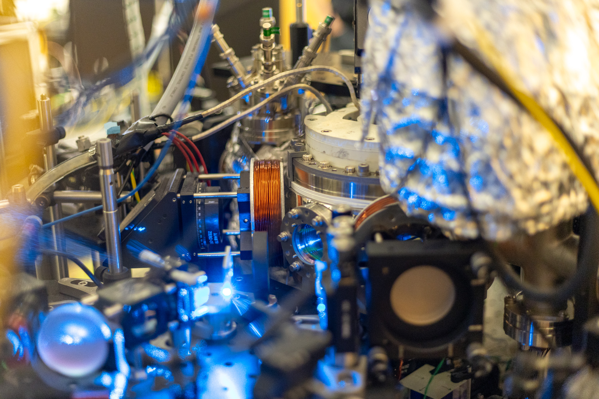
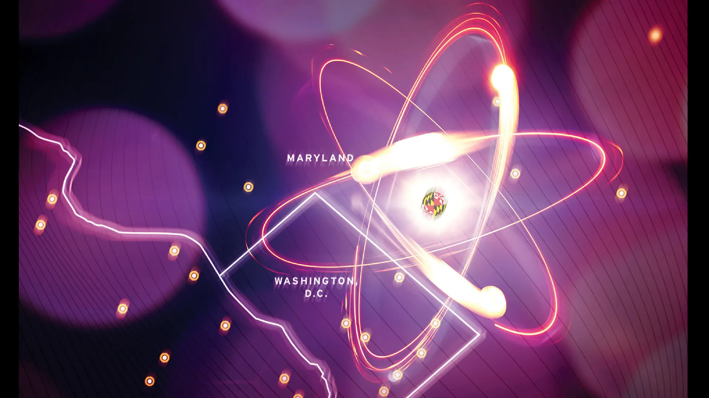
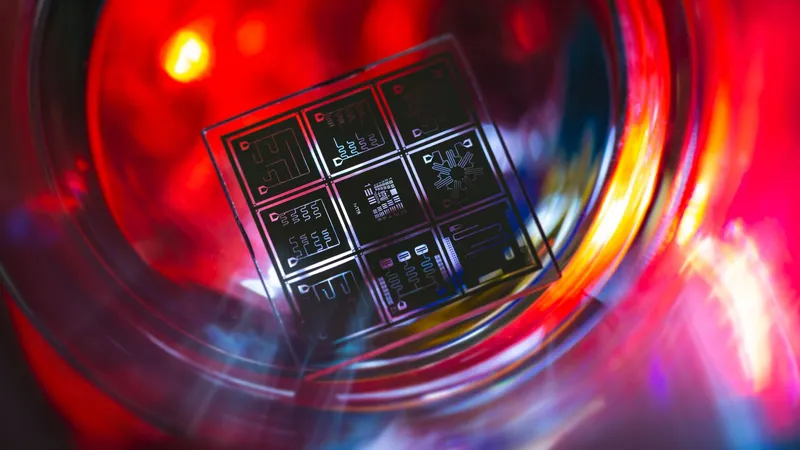
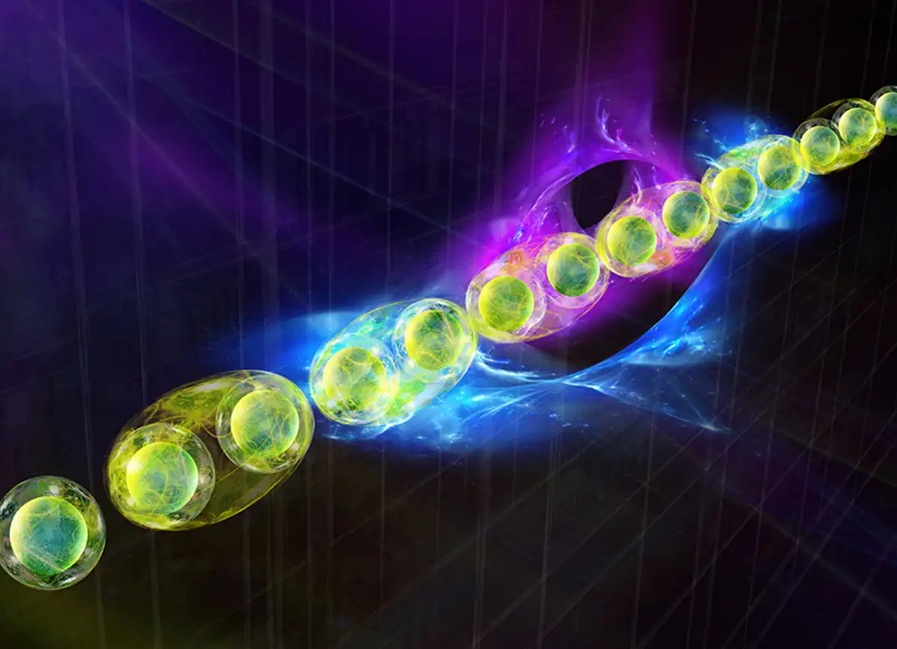
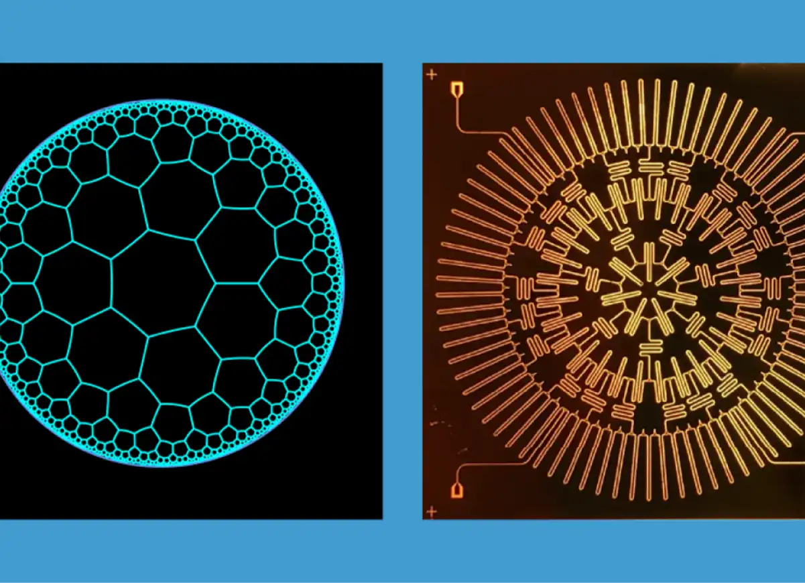
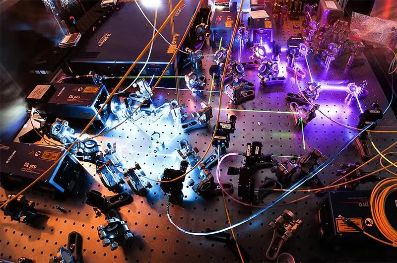
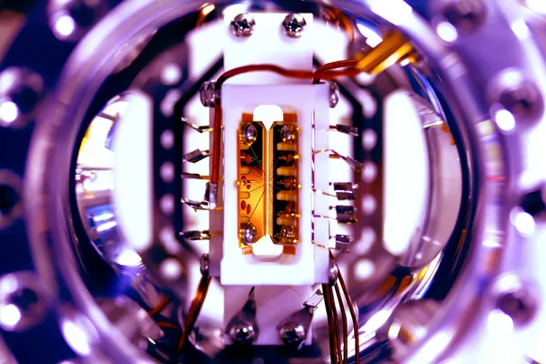

An established powerhouse of quantum discovery and innovation — leading the United States and the global community into a quantum future.

With more than 200 researchers on campus and a 15-year head start in collaboration with NIST, the University of Maryland sits at the center of the nation's quantum corridor — building the discoveries, the workforce, and the partnerships that will define the next era of computing, sensing, and communication.
From superconducting circuits to topological materials, UMD's quantum labs are designing the hardware, software, and theory of tomorrow's quantum technologies.

Hardware
Engineering superconducting circuit lattices to simulate exotic quantum phases of light and matter.

Theory
Developing randomized measurement protocols to extract topological invariants from real quantum hardware.

Computing
Building algorithms, error correction, and applications that turn early quantum hardware into useful tools.
UMD anchors a constellation of quantum centers, joint institutes, and federal partnerships — the largest concentration of quantum research and education in the country.
Joint Institute
A collaboration between UMD and NIST exploring the coherent control of light and matter at the quantum level.
Joint Center
UMD–NIST partnership advancing the theory and practice of quantum computation, communication, and information science.
NSF Institute
An NSF Quantum Leap Challenge Institute developing programmable quantum simulators that solve problems beyond the reach of classical machines.
National Lab
A first-of-its-kind partnership with IonQ giving researchers and students hands-on access to leading commercial quantum hardware.

Leadership
April 2026
UMD names a longtime JQI fellow to lead the next phase of campus-wide quantum strategy.

Research
March 2026
A new study from QuICS clarifies how qubit topology shapes the boundary between classical and quantum advantage.

Theory
February 2026
QuICS Fellow Nicole Yunger Halpern explores how entanglement and information theory illuminate the arrow of time.
Partner With Us
Investing in quantum at UMD means investing in the discoveries, the talent, and the infrastructure that will power the next century of science and industry. Our development team works directly with foundations, corporations, and individuals to design partnerships that match your priorities.